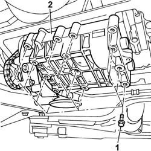
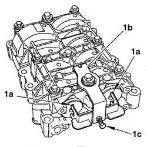
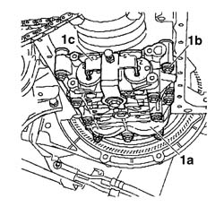
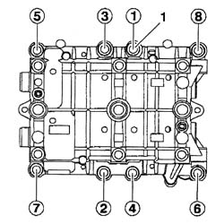

1024F30 ENGINE BALANCING SHAFTS - R.R.
- Path
- Procedures > 10 ENGINE > 1024 CRANKSHAFT AND FLYWHEEL > 1024F ENGINE BALANCING COMPONENTS > 1024F30 ENGINE BALANCING SHAFTS - R.R.
- Kind
- repair procedure (removal / refitting; the operation number is the code)
- Applies to
- engines: 2.2 16V JTD; all production periods
- Interactive page
- https://sloeber94.github.io/elrnDB-fUlss/en/#/179006917
Applies to: engines: 2.2 16V JTD; all production periods
 Removing
Removing
 Refitting
RefittingOp. 4450B04 RIGHT FRONT WHEEL R R
Op. 7055B91 RIGHT FRONT WHEEL ARCH LINER - R.R.
Op. 7055B54 UNDER-ENGINE GUARD - R R
Op. 1020A30 ENGINE OIL DRAIN PLUG - REPLACE
Op. 1092G10 SINGLE ENGINE BELT R R
Op. 1092G20 ENGINE COMPONENT SINGLE BELT FIXED TENSIONER - ONE - R + R
Op. 1048B10 RIGID AIR DELIVERY PIPE BETWEEN TURBO CHARGER AND HEAT EXCHANGER - R + R
Op. 1020A20 CRANK CASE OIL SUMP - R + R CLEAN SEALS FOR SEALANT APPLICATION
Op. 1084B12 ENGINE OIL PUMP - R+R
1. Undo the bolts fixing the shaft assembly.
2. Release and remove the balancing shaft and oil pump assembly, keeping the seals.

Applies to: engines: 2.2 16V JTD; all production periods
Refitting
Removing1. Working at the bench, position the balancing shafts with the two grooves (1a) facing upwards then fit the tool (1b) and tighten the bolt (1c).
Description | Connector | |
|---|---|---|
1b | Gauge for adjusting balancing shafts, | Locking balancing shafts |

Applies to: engines: 2.2 16V JTD; all production periods
1. Place the oil pump and balancing shaft assembly, together with the gaskets underneath, in position, checking that they are correctly centered on the pins, then partly tighten the bolts (1b) and remove the locking tool.

Applies to: engines: 2.2 16V JTD; all production periods
1. Carry out a pre-tightening cycle to the recommended torque for the fixing bolts, following the order illustrated in the diagram.
Then, following the order illustrated in the diagram, tighten the fixing bolts to the recommended torque using the angular tightening tool.
Value daNm | Fastening | Component | Ø | |
|---|---|---|---|---|
1 | 1+60° | Bolt | Balancing shaft assembly | - |
Description | Code | |
|---|---|---|
- | Torque wrench | 1.860.942.000 |

Applies to: engines: 2.2 16V JTD; all production periods
Op. 1084B12 ENGINE OIL PUMP - R+R
Op. 1084B12 ENGINE OIL PUMP - R+R
Op. 1020A20 CRANK CASE OIL SUMP - R + R CLEAN SEALS FOR SEALANT APPLICATION
Op. 1048A10 AIR CLEANER FILTERING ELEMENT - REPLACE
Op. 1024B54 ENGINE FLYWHEEL PROTECTION R R
Op. 1092G20 ENGINE COMPONENT SINGLE BELT FIXED TENSIONER - ONE - R + R
Op. 1092G10 SINGLE ENGINE BELT R R
Op. 1020A30 ENGINE OIL DRAIN PLUG - REPLACE
Op. 7055B54 UNDER-ENGINE GUARD - R R
Topics linked from this page (12)
- 1020A30 ENGINE OIL DRAIN PLUG - REPLACE
- 1020A20 CRANKCASE OIL SUMP - R.R CLEAN SURFACES FOR SEALANT APPLICATION
- 1024B54 ENGINE FLYWHEEL PROTECTION R R
- 1048A10 AIR FILTER ASSEMBLY - R.R.
- 1048B10 RIGID AIR DELIVERY PIPE BETWEEN TURBO CHARGER AND HEAT EXCHANGER - R + R
- 1084B12 ENGINE OIL PUMP - R+R
- 1092G10 SINGLE ENGINE BELT R R
- 1092G20 ENGINE COMPONENT SINGLE BELT FIXED TENSIONER - ONE - R + R
- 4450B04 RIGHT FRONT WHEEL R R
- 5040A24 AIR CONDITIONING COMPRESSOR - PARTIALLY R.R. FROM THE ENGINE WITHOUT DISCONNECTING THE PIPES
- 7055B54 UNDER-ENGINE GUARD - R R
- 7055B91 RIGHT FRONT WHEEL ARCH LINER - R.R.